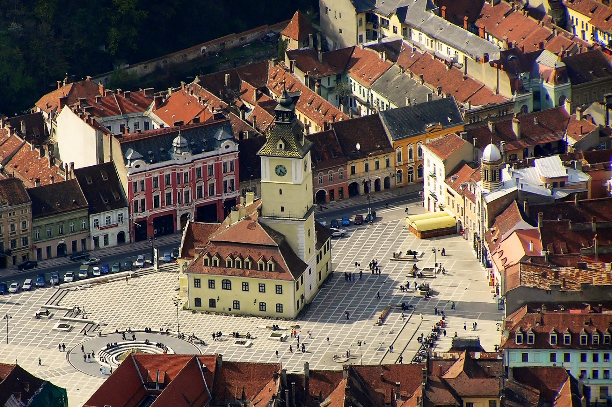
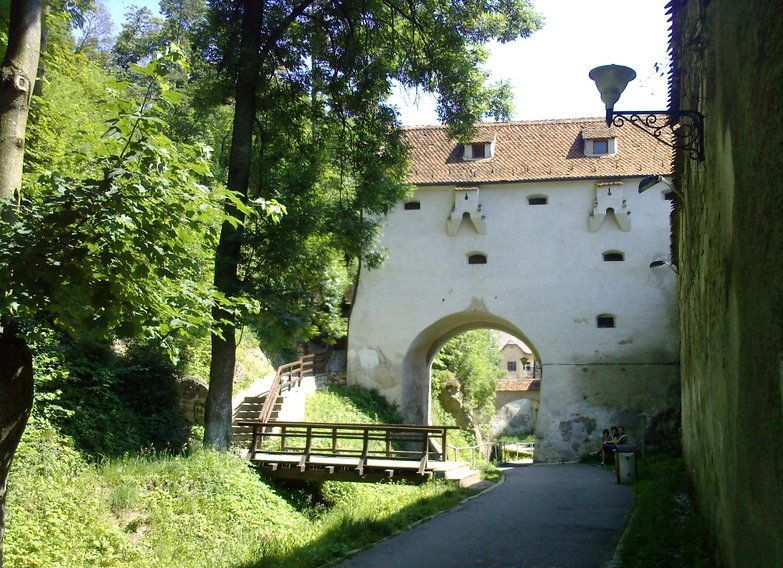
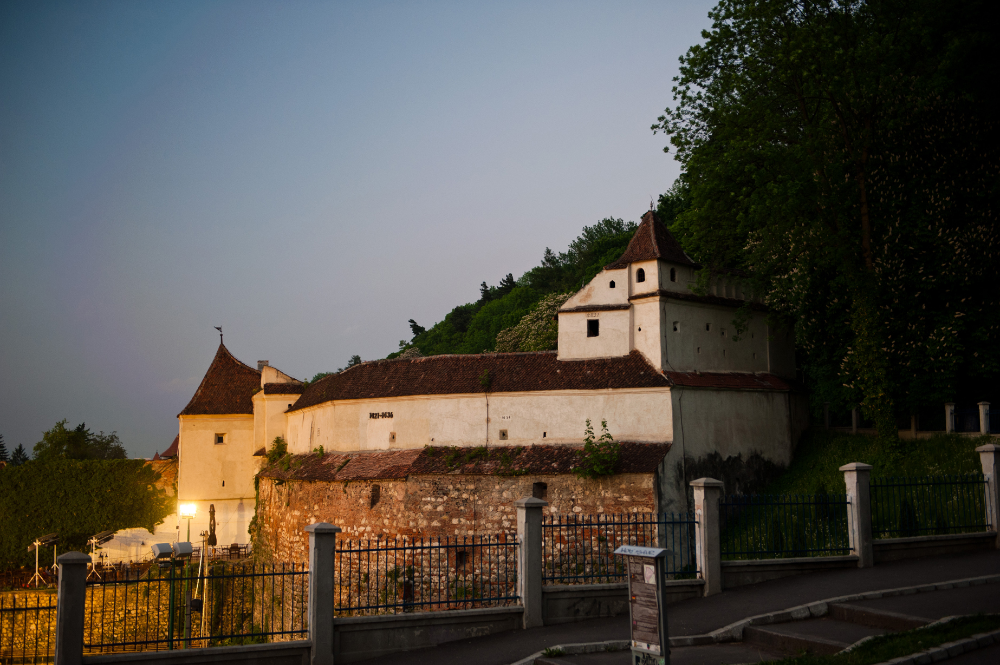
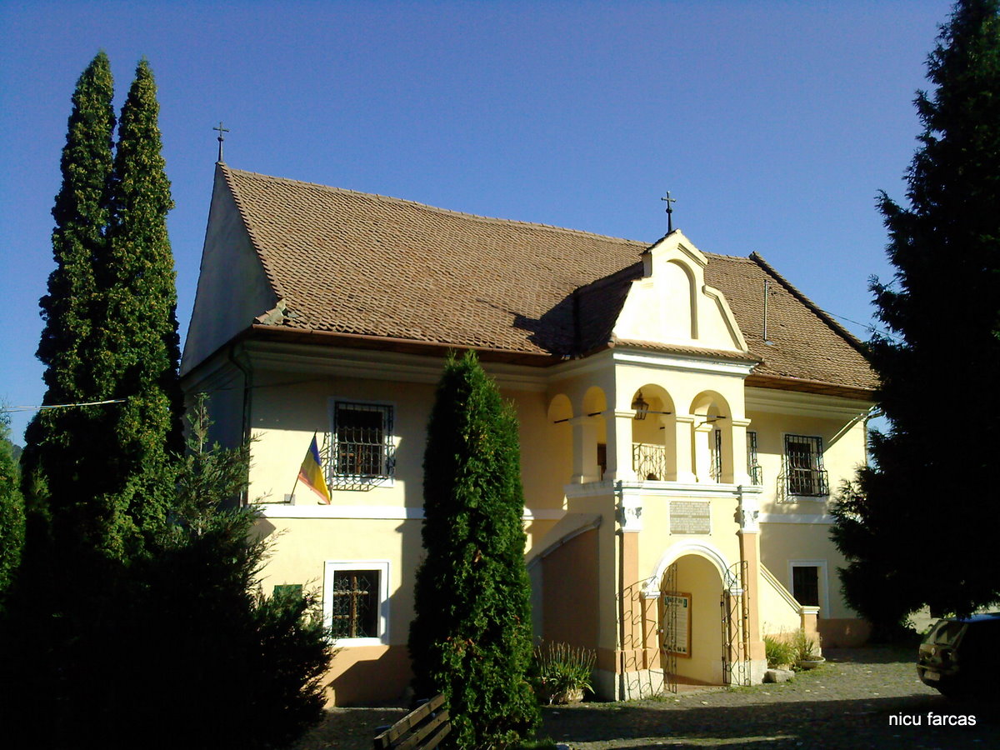

Brașov
Brașov (în germană Kronstadt, în maghiară Brassó, în latină Corona; de asemenea pe hărțile vechi trecut Cron∫tadt, Brastovia sau Braßov, în dialectul săsesc Kruhnen, Krűnen, Krînen) este municipiul de reședință al județului cu același nume, Transilvania, România.
Obiective turistice:Aleea „După ziduri”, Muzeul primei școli românești, Biserica Neagră , Bastionul Țesătorilor, Piața Sfatului.
Piața Sfatului

Piața Sfatului era, în Evul Mediu, locul în care în Brașov se organizau târguri atât pentru negustorii sași și maghiari cât și pentru cei veniți din România. Se ajungea în piața prin strada Vămii (actuala Mureșenilor), iar lângă stradă erau vămuite mărfurile. Casa Sfatului din centrul pieței, era locul unde fiecare negustor trebuia să-și așeze marfa, iar funcționarii orașului se asigurau ca aceste locuri sa fie respectate.
Biserica Neagră

Biserica Neagră (în germană Die Schwarze Kirche) este biserica parohială a comunității evanghelice luterane din Brașov, situată în centrul municipiului Brașov. Clădirea gotică a fost parțial avariată în incendiul din 1689, când zidurile ei s-au înegrit și a primit numele actual. Denumirea populară de după incendiu, „Biserica Neagră”, a fost acceptată oficial în secolul al XIX-lea.
Biserica Neagră este unul dintre cele mai reprezentative monumente de arhitectură gotică din România, datând din secolele XIV-XV. Având o lungime de peste 89 de metri este considerată a fi cea mai mare biserică din România. Datorită mărimii ei, când a fost finalizată a primit titlul de Cea mai mare biserică dintre Viena și Constantinopol.
Aleea „După ziduri”

Aleea „După ziduri” conduce de-a lungul celeilalte laturi fortificate a Cetății Brașovului și spre Romuri, o zonă care adăpostește două turnuri deja celebre. Turnul Negru (care de fapt are culoare gri) este un turn micuț, ridicat pe o mică coastă abruptă deasupra cetății și datează din secolul al XV-lea. Numele i se trage de la la un trăsnet care l-a lovit și l-a înnegrit.Tot aici se pot privi vechile clădiri din spatele zidurilor, a căror formă lasă impresia unor mici cetăți bine închise. Se poate observa un spațiu între zidul exterior și primele case, spațiu delimitat de alte ziduri și de niște turnuri mai mici. Aici erau cândva amenajate Țarcul Măcelarilor și Țarcul Curelarilor. În spatele tuturor zidurilor existau aceste spații, ocupate de câte o breaslă, loc în care își desfășurau activitatea. În dreapta se vedemincinta Bastionului Fierarilor, transformat la începutul secolului XX în Arhivele Statului. În spatele turnului , se pot vedea două găuri săpate în stâncă, reprezentând vechile căi de acces către cetate. Continuând de-a lungul aleilor se ajunge la Turnul Alb. Acesta este ceva mai mare, numele și-l datorează vopselei albe cu care a fost zugrăvit în mod repetat.
Bastionul Țesătorilor

Bastionul Țesătorilor o constructie unica in felul sau in Romania, unul din cele mai bine pastrate 7 bastioane ale cetatii din secolul 16, aici gasindu-se astazi Muzeul Cetatii Brasov. Situat in coltul de sud-vest al cetatii Brasov, Bastionul Tesatorilor, ocupa o suprafata de 1.616 mp. Zidurile sale au o grosime cuprinsa intre 4 m la baza si 1 m la cel de-al patrulea nivel al constructiei. Construit de catre breasla tesatorilor, pe patru nivele, cu goluri de tragere, guri de pacura si cu doua turnuri de straja, bastionul are o arhitectura unica in sud-estul Europei. Fiind crutat de marele incendiu de la 1689, se pastreaza in forma sa originala.
Muzeul primei școli românești

Prima școală românească din Brașov se află în interiorul curții Bisericii Sfântul Nicolae din cartierul istoric Șcheii Brașovului. Primele cursuri în limba română au avut loc aici în 1583. Actuala clădire datează din anul 1760, fiind declarată monument istoric (cod LMI BV-II-m-A-11589.02).